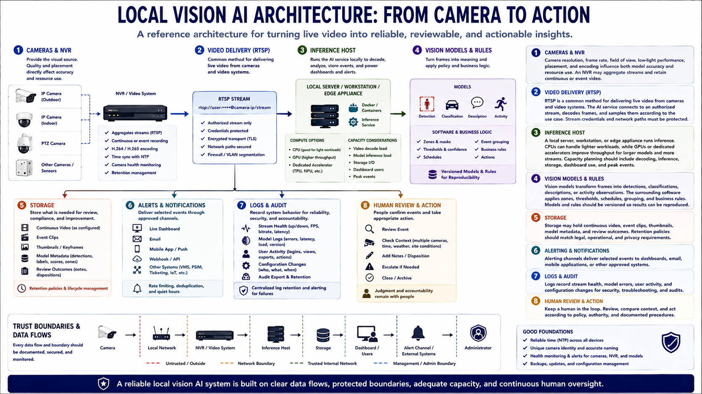

Core System Components
Connecting to LMS... Progress: in progress

Narration
Cameras and network video recorders provide the visual source. Camera resolution, frame rate, field of view, low-light performance, placement, and encoding influence both model accuracy and resource use. An NVR may aggregate streams and retain continuous or event video.
RTSP is a common method for delivering live video from cameras and video systems. The AI service connects to an authorized stream, decodes frames, and samples them according to the use case. Stream credentials and network paths must be protected.
A local server, workstation, or edge appliance runs inference. CPUs can handle lighter workloads, while GPUs or dedicated accelerators improve throughput for larger models and more streams. Capacity planning should include decoding, inference, storage, dashboard use, and peak events.
Vision models transform frames into detections, classifications, descriptions, or activity observations. The surrounding software applies zones, thresholds, schedules, grouping, and business rules. Models and rules should be versioned so results can be reproduced.
Storage may hold continuous video, event clips, thumbnails, model metadata, and review outcomes. Alerting channels deliver selected events to dashboards, email, mobile applications, or other approved systems. Logs record stream health, model errors, user activity, and configuration changes.
The architecture should show every data flow and trust boundary: camera, network, NVR, inference host, storage, dashboard, alert channel, and administrator. Reliable time and camera identity let reviewers correlate events. Monitoring health is part of the product, because a silent camera or stalled model creates false confidence.